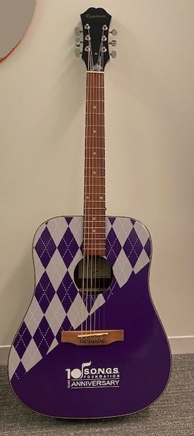

Member relations at ILR and partnerships at NMPA
Associations run on relationships. Members need to feel their dues matter, boards need a reliable contact, and partners need a reason to say yes again. At two associations, I was the person who made that happen.
for ILR's board and member groups
at ILR member meetings on digital products and campaigns
for NMPA and the SONGS Foundation
The U.S. Chamber Institute for Legal Reform's members come from across the business community. I was the first point of contact for ILR's board and member groups: when a question came up or a need arose, they came to me.
I also represented the marketing team in the room, presenting ILR's digital products and marketing campaigns at member meetings so members could see what their support made possible.
After the digital improvements and the formal onboarding and follow-up, engagement with the members-only website increased.
At the National Music Publishers' Association, I managed and grew the partnerships that support songwriters and the SONGS Foundation.
One I'm especially proud of: Gibson donated four guitars for the SONGS Foundation's 10th anniversary, each with a custom design I created.

The SONGS Foundation's golf fundraiser came not long after the devastating Los Angeles wildfires. It felt wrong to hold a celebration in LA without recognizing the people who had fought them.
I reached out to the chief of the Los Angeles Fire Department and the department's golf group, and invited firefighters to join the tournament as honored guests. They were deeply grateful to be included, and the partnership gave the event a meaning that went well beyond fundraising.
Regular, personal contact, not only when there's something to ask for.
Thank members, sponsors, and partners publicly and specifically, from signage to impact reports.
Bring members' and board members' ideas back into the plan, so they see their input matters.
Membership and partnerships aren't transactions. People renew, sponsor, and donate when they trust the person on the other end and can see the difference they're making. My job is to be that person, and to show them the difference.